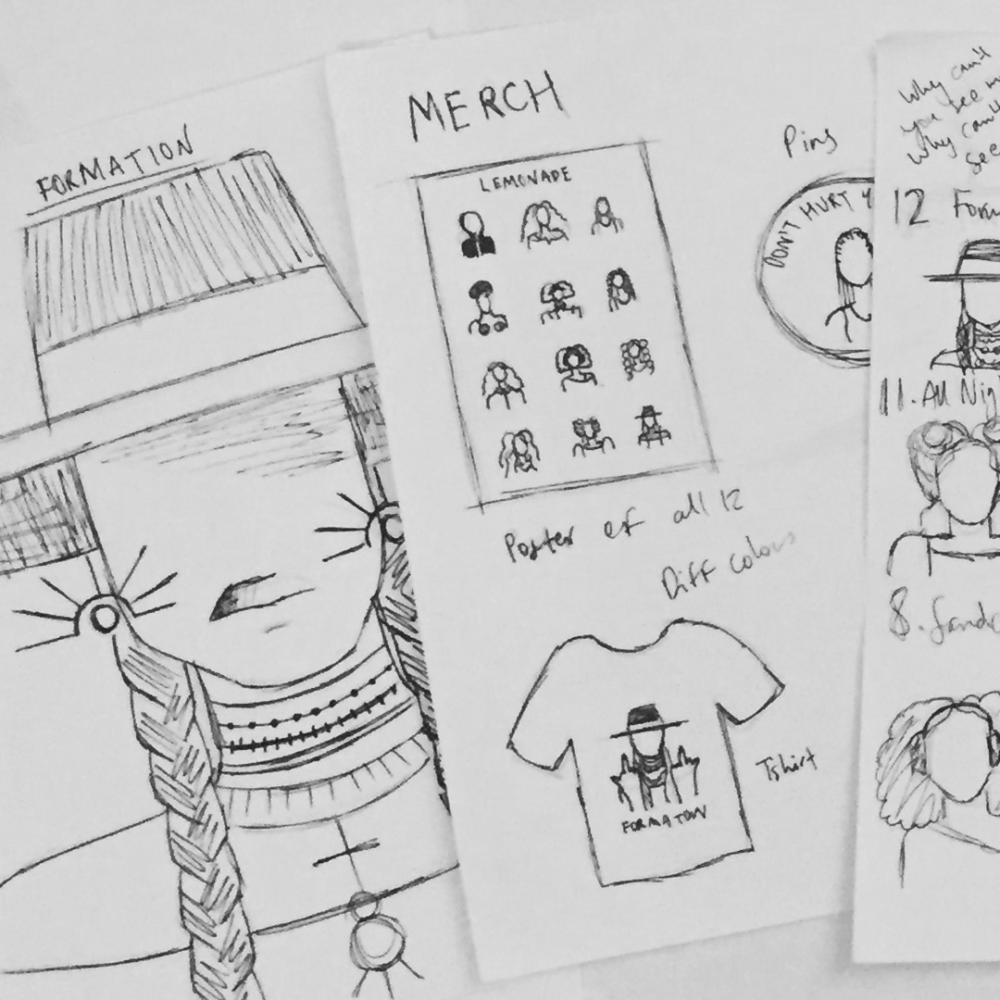
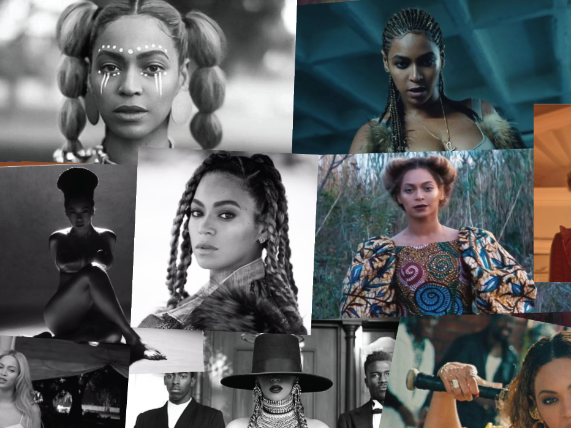

As part of my ‘Creative Entrepreneurship’ module in university I was tasked with creating a set of 12 icons that could possibly be sold to a company or used to make money in some way. Secondly a promotional website had to be created associated with the icons.

My Approach
I started this project as I always do, brainstorming different ideas on paper. I came up with the idea of making a series of icons based on Beyoncé’s Lemonade.
In April of 2016 Beyoncé dropped Lemonade, her sixth album, 12 tracks, accompanied by an hour-long film with a video for all 12 songs (12 videos, 12 icons... see my thinking?). Lemonade is a record breaking critically acclaimed piece of art that sold millions worldwide and the associated tour grossed over $250 million. Lemonade is clearly an extremely profitable force so why not jump on the bandwagon!
So I started by creating a Lemonade mood board and sketching out some concepts, whilst there were 12 music videos which seemed straightforward creating one icon for each, in each video Beyoncé is sporting up to 9 separate works, so I set out to decide what was the most iconic look from each video or what look I would like to ‘iconise’ the most.

After this I had to decide what kind of style I was going to employ when design my icons. I researched other sets of icons and illustrations, I sketched a lot. I realised what I really wanted to show off was the actual hair and fashion Lemonade used, the afro-antebellum styling is utilised beautifully throughout the film and I wanted to put that at the forefront. Therefore I decided to make the icons faceless. This would then draw the eye to what is around the blank face; the hair style, the jewellery, the clothing and hopefully allow the viewer to appreciate not only the diversity of the looks in Lemonade but also the diversity in afro-centric hairstyles, jewellery and clothing.
I then began designing the icons, I decided through my research that I would go for a very flat style using shapes and lines, minimal to no shading or shadows.
Final Outcome
Soon I had 12 icons designed, I had a lot of fun translating the physical, complex and beautiful styling of Lemonade into to 12 simple but stylish icons. When the icons were done I saw the amazing potential they had for merchandise, posters, mugs, calendars, tote bags. I decided to see if people would actually buy the designs so I did a run of 15 poster prints in 3 different sizes and put them up on etsy. Within a month I had sold out! Going forward with this I want to create different merchandise products and sell them.
Finally I had to create the promotional website for the icons. I made this a very simple site letting the icons speak for themselves. I also used the website to showcase the different merhcnadise the icons were and could be used for. The promotional site can be viewed here!